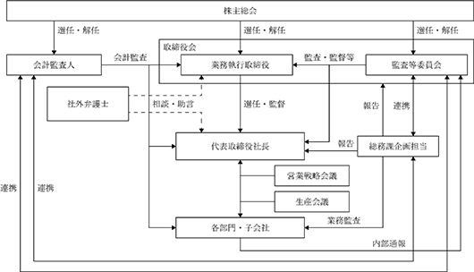

該当事項はありません。
該当事項はありません。
③ 【その他の新株予約権等の状況】
当事業年度において、会社法に基づき発行した新株予約権は、以下の通りであります。
第三者割当による第１回新株予約権（行使価額修正条項付）
※当事業年度の末日（2024年１月31日）における内容を記載しております。当事業年度の末日から提出日の前月末現在（2024年３月31日）にかけて変更された事項については、提出日の前月末現在における内容を[ ]内に記載しており、その他の事項については当事業年度の末日における内容から変更はありません。
(注)１．当該行使価額修正条項付新株予約権の特質
(1) 本新株予約権の目的となる株式の種類及び数
本新株予約権の目的となる株式の種類及び総数は、当社普通株式（「２．本新株予約権の目的となる株式の種類及び数」参照。）157,500株（本新株予約権１個当たりの目的である株式の数は100株）で確定しており、株価の上昇又は下落により行使価額が修正されても変化しない（ただし、「２．本新株予約権の目的となる株式の種類及び数」に記載のとおり、調整されることがある。）。なお、株価の上昇又は下落により行使価額が修正された場合、本新株予約権による資金調達の額は増加又は減少する。
(2) 行使価額の修正
発行日以降、行使価額は本項に基づき修正される。発行日以降「７．本新株予約権の行使期間」欄に定める期間の満了日まで、「５．行使価額の修正」を条件に、行使価額は、各修正日（「１１．本新株予約権の行使請求の効力発生時期」に定義する。）の前取引日の株式会社東京証券取引所（以下、「東京証券取引所」という。）における当社普通株式の普通取引の終値（以下、「終値」という。）（同日に終値がない場合には、その直前の終値）の90％に相当する金額（円位未満小数第２位まで算出し、その小数第２位の端数を切り上げた金額）に修正される。
なお、「取引日」とは、東京証券取引所の取引日をいうものとする。
(3) 行使価額の修正頻度
行使の際に本項第(2)号に記載の条件に該当する都度、各修正日の直前取引日において、修正される。
(4) 行使価額の下限
行使価額は1,572円を下回らないものとする。本項第(2)号に基づく計算によると修正後の行使価額が下限行使価額を下回ることとなる場合、行使価額は下限行使価額とする。ただし、下限行使価額は「６．行使価額の調整」の規定を準用して調整される。
(5) 割当株式数の上限
157,500株(2023年５月１日の当社発行済普通株式総数816,979株に対する割合は、19.27％(小数第３位の端数を切り捨てた値))。ただし、「２．本新株予約権の目的となる株式の種類及び数」に記載のとおり、調整される場合がある。
(6) 本新株予約権が全て行使された場合の資金調達額の下限(本項(4)に記載の行使価額の下限にて本新株予約権が全て行使された場合の資金調達額)247,590,000円(ただし、本新株予約権は全て行使されない可能性がある。)。
２．本新株予約権の目的となる株式の種類及び数
(1) 本新株予約権の目的である株式の種類及び総数は当社普通株式157,500株とする（本新株予約権１個当たりの目的である株式の数（以下「割当株式数」という。）は、100株とする。）。
ただし、本項第(2)号によって割当株式数が調整される場合には、本新株予約権の目的である株式の総数は調整後割当株式数に応じて調整されるものとする。
(2) ① 当社が当社普通株式の分割、無償割当て又は併合（以下「株式分割等」と総称する。）を行う場合には、割当株式数は次の算式により調整される。
調整後割当株式数＝調整前割当株式数×株式分割等の比率
② 当社が第６項の規定に従って行使価額（第３項第(2)号に定義する。）の調整を行う場合（第６項(5)号に従って下限行使価額（第５項第(3)号に定義する。）のみが調整される場合を含むが、株式分割等を原因とする場合を除く。）には、割当株式数は次の算式により調整されるものとする。
調整前割当株式数 × 調整前行使価額
調整後割当株式数 ＝ ────────────────────
調 整 後 行 使 価 額
上記算式における調整前行使価額及び調整後行使価額は、第６項記載の調整前行使価額及び調整後行使価額とする（なお、第６項第(5)号に従って下限行使価額のみが調整される場合は、仮に第６項に従って行使価額が調整された場合における調整前行使価額及び調整後行使価額とする。）。
③ 本項に基づく調整は調整後割当株式数を適用する日において未行使の本新株予約権に係る割当株式数についてのみ行われ、調整の結果生じる１株未満の端数は切り捨てるものとする。
④ 調整後割当株式数を適用する日は、当該調整事由に係る第６項第(2)号及び第(4)号記載の調整後行使価額を適用する日と同日とする。
⑤ 割当株式数の調整を行うときは、当社は、あらかじめ書面によりその旨並びにその事由、調整前割当株式数、調整後割当株式数及びその適用の日その他必要な事項を本新株予約権に係る新株予約権者（以下「本新株予約権者」という。）に通知する。ただし、第６項第(2)号⑦に定める場合その他適用の日の前日までに前記の通知を行うことができないときは、適用の日以降すみやかにこれを行う。
３．本新株予約権の行使に際して出資される財産の内容及び価額
(1) 本新株予約権１個の行使に際して出資される財産は金銭とし、その価額は、本項第(2)号に定める行使価額に割当株式数を乗じた額とするが、計算の結果１円未満の端数を生ずる場合は、その端数を切り上げるものとする。
(2) 本新株予約権の行使に際して出資される当社普通株式１株当たりの金銭の額（以下「行使価額」という。）は、当初2,358円とする。ただし、行使価額は第５項又は第６項に従い修正又は調整される。
４．本新株予約権の行使により株式を発行する場合の増加する資本金の額は、会社計算規則第17条の定めるところに従って算出された資本金等増加限度額に0.5を乗じた金額とし、計算の結果１円未満の端数を生ずる場合は、その端数を切り上げるものとする。増加する資本準備金の額は、資本金等増加限度額より増加する資本金の額を減じた額とする。
５．行使価額の修正
(1) 行使価額は、修正日（第11項に定義する。）に、修正日の直前取引日（同日に終値がない場合には、その直前の終値のある取引日をいい、以下「算定基準日」という。）の株式会社東京証券取引所（以下「東京証券取引所」という。）における当社普通株式の普通取引の終値の90％に相当する金額（円位未満小数第２位まで算出し、その小数第２位を切り上げる。以下「修正後行使価額」という。）に修正される。
(2) 修正後行使価額の算出において、算定基準日に第６項記載の行使価額の調整事由が生じた場合は、当該算定基準日の東京証券取引所における当社普通株式の普通取引の終値は当該事由を勘案して調整されるものとする。
(3) 本項第(1)号及び第(2)号による算出の結果得られた金額が1,572円（以下「下限行使価額」という。）を下回ることとなる場合には、修正後行使価額は下限行使価額とする。ただし、下限行使価額は第６項の規定を準用して調整される。
６．行使価額の調整
(1) 当社は、本新株予約権の発行後、本項第(2)号に掲げる各事由により当社普通株式の発行済株式総数に変更を生じる場合又は変更を生じる可能性がある場合は、次に定める算式（以下「行使価額調整式」という。）をもって行使価額を調整する。
交付普通株式数×１株当たりの払込金額
既発行普通株式数 ＋ ───────────────────
時 価
調整後行使価額 ＝ 調整前行使価額 × ─────────────────────────────―
既発行普通株式数 ＋ 交付普通株式数
「既発行普通株式数」は、当社普通株式の株主（以下「当社普通株主」という。）に割当てを受ける権利を与えるための基準日が定められている場合はその日、また当該基準日が定められていない場合は、調整後行使価額を適用する日の１か月前の日における当社の発行済普通株式数から調整後行使価額を適用する日における当社の保有する当社普通株式数を控除し、当該行使価額の調整前に本項第(2)号乃至第(4)号に基づき交付普通株式数とみなされた当社普通株式のうち未だ交付されていない当社普通株式の株式数を加えた数とする。なお、当社普通株式の株式分割が行われる場合には、行使価額調整式で使用する交付普通株式数は、基準日における当社の保有する当社普通株式に関して増加した当社普通株式数を含まないものとする。
(2) 行使価額調整式により本新株予約権の行使価額の調整を行う場合及びその調整後行使価額を適用する日については、次に定めるところによる。
① 行使価額調整式で使用する時価（本項第(3)号②に定義する。本項第(4)号③の場合を除き、以下「時価」という。）を下回る払込金額をもって当社普通株式を交付する場合（ただし、当社の発行した取得条項付株式、取得請求権付株式若しくは取得条項付新株予約権（新株予約権付社債に付されたものを含む。）の取得と引換えに交付する場合又は当社普通株式の交付を請求できる新株予約権（新株予約権付社債に付されたものを含む。）その他の証券若しくは権利の転換、交換若しくは行使による場合を除く。）
調整後行使価額は、払込期日（募集に際して払込期間が設けられたときは当該払込期間の最終日とする。以下同じ。）の翌日以降、当社普通株主に割当てを受ける権利を与えるための基準日がある場合は、その日の翌日以降、これを適用する。
② 当社普通株式の株式分割又は当社普通株式の無償割当てをする場合
調整後行使価額は、当社普通株式の株式分割のための基準日の翌日以降又は当社普通株式の無償割当ての効力発生日の翌日以降、これを適用する。ただし、当社普通株式の無償割当てについて、当社普通株主に割当てを受ける権利を与えるための基準日がある場合は、その日の翌日以降これを適用する。
③ 取得請求権付株式であって、その取得と引換えに時価を下回る対価をもって当社普通株式を交付する定めがあるものを発行する場合（無償割当ての場合を含む。）、又は時価を下回る対価をもって当社普通株式の交付を請求できる新株予約権（新株予約権付社債に付されたものを含む。）その他の証券若しくは権利を発行する場合（無償割当ての場合を含む。ただし、当社又はその関係会社（財務諸表等の用語、様式及び作成方法に関する規則第８条第８項に定める関係会社をいう。）の取締役その他の役員又は使用人に新株予約権を割り当てる場合を除く。）
調整後行使価額は、発行される取得請求権付株式、新株予約権（新株予約権付社債に付されたものを含む。）その他の証券又は権利（以下「取得請求権付株式等」という。）の全てが当初の条件で転換、交換又は行使され当社普通株式が交付されたものとみなして行使価額調整式を準用して算出するものとし、払込期日（新株予約権（新株予約権付社債に付されたものを含む。）の場合は割当日）又は無償割当ての効力発生日の翌日以降、これを適用する。ただし、当社普通株主に割当てを受ける権利を与えるための基準日がある場合は、その日の翌日以降これを適用する。
上記にかかわらず、転換、交換又は行使に際して交付される当社普通株式の対価が取得請求権付株式等が発行された時点で確定していない場合は、調整後行使価額は、当該対価の確定時点で発行されている取得請求権付株式等の全てが当該対価の確定時点の条件で転換、交換又は行使され当社普通株式が交付されたものとみなして行使価額調整式を準用して算出するものとし、当該対価が確定した日の翌日以降これを適用する。
④ 当社の発行した取得条項付株式又は取得条項付新株予約権（新株予約権付社債に付されたものを含む。）の取得と引換えに時価を下回る対価をもって当社普通株式を交付する場合
調整後行使価額は、取得日の翌日以降これを適用する。
上記にかかわらず、上記取得条項付株式又は取得条項付新株予約権（新株予約権付社債に付されたものを含む。）に関して当該調整前に本号③又は⑤による行使価額の調整が行われている場合には、(ⅰ)上記交付が行われた後の完全希薄化後普通株式数（本項第(3)号③に定義する。）が、上記交付の直前の既発行普通株式数を超えるときに限り、調整後行使価額は、超過する株式数を行使価額調整式の交付普通株式数とみなして、行使価額調整式を準用して算出するものとし、(ⅱ)上記交付の直前の既発行普通株式数を超えない場合は、本④の調整は行わないものとする。
⑤ 取得請求権付株式等の発行条件に従い、当社普通株式１株当たりの対価（本⑤において「取得価額等」という。）の下方修正その他これに類する取得価額等の下方への変更（本項第(2)号乃至第(4)号と類似の希薄化防止条項に基づく取得価額等の調整を除く。以下「下方修正等」という。）が行われ、当該下方修正等後の取得価額等が当該下方修正等が行われる日（以下「取得価額等修正日」という。）における時価を下回る価額になる場合
(i)当該取得請求権付株式等に関し、本号③による行使価額の調整が取得価額等修正日前に行われていない場合、調整後行使価額は、取得価額等修正日に残存する取得請求権付株式等の全てが当該下方修正等後の条件で転換、交換又は行使され当社普通株式が交付されたものとみなして本号③の規定を準用して算出するものとし、取得価額等修正日の翌日以降これを適用する。
(ii)当該取得請求権付株式等に関し、本号③又は上記(ⅰ)による行使価額の調整が取得価額等修正日前に行われている場合で、取得価額等修正日に残存する取得請求権付株式等の全てが当該下方修正等後の条件で転換、交換又は行使され当社普通株式が交付されたものとみなしたときの完全希薄化後普通株式数が、当該下方修正等が行われなかった場合の既発行普通株式数を超えるときには、調整後行使価額は、当該超過株式数を行使価額調整式の「交付普通株式数」とみなして、行使価額調整式を準用して算出するものとし、取得価額等修正日の翌日以降これを適用する。
⑥ 本号③乃至⑤における対価とは、当該株式又は新株予約権（新株予約権付社債に付されたものを含む。）の発行に際して払込みがなされた額（本号③における新株予約権（新株予約権付社債に付されたものを含む。）の場合には、その行使に際して出資される財産の価額を加えた額とする。）から、その取得又は行使に際して当該株式又は新株予約権の所持人に交付される金銭その他の財産の価額を控除した金額を、その取得又は行使に際して交付される当社普通株式の数で除した金額をいう。
⑦ 本号①乃至③の各取引において、当社普通株主に割当てを受ける権利を与えるための基準日が設定され、かつ、各取引の効力の発生が当該基準日以降の株主総会又は取締役会その他当社の機関の承認を条件としているときには、本号①乃至③にかかわらず、調整後行使価額は、当該承認があった日の翌日以降これを適用するものとする。
この場合において、当該基準日の翌日から当該取引の承認があった日までに、本新株予約権を行使した新株予約権者に対しては、次の算出方法により、当社普通株式を交付するものとする。
(調整前行使価額－調整後行使価額)×調整前行使価額により当該期間内に交付された株式数
株式数 ＝ ────────────────────────────────────────―
調 整 後 行 使 価 額
この場合に１株未満の端数を生じたときはこれを切り捨て、現金による調整は行わない。
(3) ① 行使価額調整式の計算については、円位未満小数第２位まで算出し、その小数第２位を切り捨てる。
② 時価は、調整後行使価額を適用する日（ただし、本項第(2)号⑦の場合は基準日）に先立つ45取引日目に始まる30取引日の東京証券取引所における当社普通株式の普通取引の毎日の終値の平均値（終値のない日数を除く。）とする。この場合、平均値の計算については、円位未満小数第２位まで算出し、その小数第２位を切り捨てる。
③ 完全希薄化後普通株式数は、調整後行使価額を適用する日の１か月前の日における当社の発行済普通株式数から、調整後行使価額を適用する日における当社の保有する当社普通株式数を控除し、当該行使価額の調整前に、本項第(2)号乃至第(4)号に基づき交付普通株式数とみなされた当社普通株式のうち未だ交付されていない当社普通株式の株式数を加えたものとする（当該行使価額の調整において本項第(2)号乃至第(4)号に基づき交付普通株式数とみなされることとなる当社普通株式数を含む。）。
④ 本項第(2)号①乃至⑤に定める証券又は権利に類似した証券又は権利が交付された場合における調整後行使価額は、本項第(2)号の規定のうち、当該証券又は権利に類似する証券又は権利についての規定を準用して算出するものとする。
(4) 本項第(2)号で定める行使価額の調整を必要とする場合以外にも、次に掲げる場合には、当社は、必要な行使価額の調整を行う。
① 株式の併合、資本金の減少、当社を存続会社とする合併、他の会社が行う吸収分割による当該会社の権利義務の全部若しくは一部の承継、又は他の株式会社が行う株式交換若しくは株式交付による当該株式会社の発行済株式の全部の取得のために行使価額の調整を必要とするとき。
② その他当社普通株式数の変更又は変更の可能性が生じる事由の発生により行使価額の調整を必要とするとき。
③ 行使価額を調整すべき事由が２つ以上相接して発生し、一方の事由に基づく調整後行使価額の算出にあたり使用すべき時価につき、他方の事由による影響を考慮する必要があるとき。
(5) 本項第(2)号及び第(4)号にかかわらず、本項第(2)号及び第(4)号に基づく調整後行使価額を適用する日が、第５項に基づく行使価額を修正する日と一致する場合には、本項第(2)号及び第(4)号に基づく行使価額の調整は行わないものとする。ただし、この場合においても、下限行使価額については、かかる調整を行うものとする。
(6) 本項第(1)号乃至第(5)号により行使価額の調整を行うとき（下限行使価額が調整されるときを含む。）は、当社は、あらかじめ書面によりその旨並びにその事由、調整前行使価額、調整後行使価額及びその適用の日その他必要な事項を本新株予約権者に通知する。ただし、本項第(2)号⑦に定める場合その他適用の日の前日までに前記の通知を行うことができないときは、適用の日以降すみやかにこれを行う。また、本項第(5)号の規定が適用される場合には、かかる通知は下限行使価額の調整についてのみ行う。
７．本新株予約権の行使期間
2023年５月18日から2025年５月19日（ただし、第９項に従って当社が本新株予約権の全部を取得する場合には、当社が取得する本新株予約権については、当社による取得の効力発生日の前銀行営業日）まで。ただし、行使期間の最終日が銀行営業日でない場合にはその前銀行営業日を最終日とする。
８．その他の本新株予約権の行使の条件
各本新株予約権の一部行使はできないものとする。
９．本新株予約権の取得条項
(1) 当社は、本新株予約権の取得が必要と当社取締役会が決議した場合には、本新株予約権の払込期日の翌日以降、会社法第273条及び第274条の規定に従って、取得日の２週間前までに通知をしたうえで、当社取締役会で定める取得日に、本新株予約権１個当たりその払込金額と同額を交付して、残存する本新株予約権の全部を取得することができる。
(2) 当社は、当社が消滅会社となる合併契約又は当社が他の会社の完全子会社となる株式交換契約、株式交付計画若しくは株式移転計画（以下「組織再編行為」という。）が当社の株主総会（株主総会の決議を要しない場合は、取締役会）で承認された場合、当該組織再編行為の効力発生日以前に、会社法第273条及び第274条の規定に従って、取得日の２週間前までに通知をしたうえで、当社取締役会で定める取得日に、本新株予約権１個当たりその払込金額と同額を交付して、残存する本新株予約権の全部を取得する。
(3) 当社は、当社が発行する株式が東京証券取引所により監理銘柄、特設注意市場銘柄若しくは整理銘柄に指定された場合又は上場廃止となった場合には、当該銘柄に指定された日又は上場廃止が決定した日から２週間後の日（銀行休業日である場合には、その翌銀行営業日とする。）に、本新株予約権１個当たりその払込金額と同額を交付して、本新株予約権者（当社を除く。）の保有する本新株予約権の全部を取得する。
１０．本新株予約権の行使請求及び払込の方法
(1) 本新株予約権を行使する場合には、株式会社証券保管振替機構（以下「機構」という。）又は社債、株式等の振替に関する法律（以下「社債等振替法」という。）第２条第４項に定める口座管理機関（以下「口座管理機関」という。）に対し行使請求に要する手続きを行い、第７項記載の本新株予約権の行使期間中に機構により本新株予約権の行使請求受付場所（以下「行使請求受付場所」という。）に行使請求の通知が行われることにより行われる。
(2) 本新株予約権を行使する場合には、前号の行使請求に要する手続きに加えて、本新株予約権の行使に際して出資される財産の価額の全額を機構又は口座管理機関を通じて現金にて本新株予約権の行使に関する払込取扱場所の当社の指定する口座に振り込むものとする。
(3) 本新株予約権の行使請求を行った者は、その後これを撤回することができない。
１１．本新株予約権の行使請求の効力発生時期
本新株予約権の行使請求の効力は、機構による行使請求の通知が行使請求受付場所に行われ、かつ、本新株予約権の行使に際して出資される財産の価額の全額が第10項第(2)号記載の口座に入金された日（「修正日」という。）に発生する。
１２．本新株予約権の払込金額及びその行使に際して出資される財産の価額の算定の理由
一般的な価格算定モデルであるモンテカルロ・シミュレーションを基礎として、評価基準日の市場環境、当社株式の流動性、当社の資金調達需要、割当予定先の株式処分コスト、割当予定先の権利行使行動及び割当予定先の株式保有動向等について一定の前提（当社株式の株価、当社株式のボラティリティ、配当利回り、無リスク利子率等）を置いて評価した結果を参考に、本新株予約権１個当たりの払込金額は、1,252円とした。さらに、本新株予約権の行使に際して出資される財産の価額は第３項記載のとおりとし、行使価額は当初、2023年４月28日の東京証券取引所における当社普通株式の普通取引の終値の90％に相当する金額（ただし、１円未満端数切上げ）とした。
１３．新株予約権証券の不発行
当社は、本新株予約権に係る新株予約権証券を発行しない。
１４．権利の行使に関する事項について割当先との間で締結した取決めの内容
(1) 当社による行使停止
当社は、当社取締役会の決議又は当社取締役会の包括委任決議により当社取締役会から委任を受けた代表取締役社長の決定により、割当先に対し、何度でも、本新株予約権を行使することができない期間を指定する旨の通知（以下「行使停止要請通知」という。）を行うことができる。行使停止要請通知において、当社は割当先に本新株予約権について権利行使をすることができない期間（以下「行使停止期間」という。）を指定する。
当社が行使停止要請通知を行った場合には、割当先は、行使停止期間において本新株予約権を行使することができない。また、当社は、割当先による行使停止要請通知の受領後も、当社取締役会又は当社取締役会の包括委任決議により当社取締役会から委任を受けた代表取締役社長の決定により、当該通知を撤回し又は変更することができる。なお、いずれの行使停止期間の開始日も、2023年５月18日以降の日とし、いずれの行使停止期間の終了日も、2025年４月21日以前の日とする。また、当社が、当社取締役会又は当社取締役会の包括委任決議により当社取締役会から委任を受けた代表取締役社長の決定により、行使停止要請通知を行うこと又は行使停止要請通知を撤回あるいは変更することを決定した場合、当社は、その都度その旨開示するものとする。
(2) 割当先による本新株予約権の取得の請求
2024年５月20日（同日を含む。）以降のいずれかの取引日に、東京証券取引所における当社普通株式の普通取引の終値が本新株予約権の下限行使価額を下回った場合において、当該取引日以降の取引日、又は2025年４月18日（同日を含む。）以降2025年４月28日（同日を含み、かつ、同日必着とする。）までの期間内の取引日のいずれかにおいて、割当先は、当社に対し、本新株予約権の取得を請求する旨の通知（以下「取得請求通知」という。）を行うことができる。割当先が取得請求通知を行った場合には、当社は、取得請求通知を受領した日から３週間以内に本新株予約権の発行要項に従い、本新株予約権の払込金額と同額の金銭を支払うことにより残存する本新株予約権の全部を取得しなければならない。
(3) 株式等の譲渡制限
当社は、割当先との間で、本新株予約権買取契約の締結日以降、2023年11月12日までの間、本新株予約権が存する限り、割当先の事前の書面による承諾なくして、当社の普通株式若しくはその他の株式、又は普通株式若しくはその他の株式に転換若しくは交換可能であるか若しくはこれらを受領する権利を有する一切の有価証券の発行、募集、販売、販売の委託、買取オプションの付与等を以下の場合を除き行わない旨を合意している。
① 発行済普通株式の全株式について、株式分割を行う場合。
② ストックオプションプランに基づき、当社の普通株式を買い取る、取得する若しくは引き受ける権利を付与する場合又は当該権利の行使若しくは当社の普通株式に転換される若しくは転換できる証券の転換により普通株式を発行若しくは処分する場合。
③ 本新株予約権を発行する場合及び本新株予約権の行使により普通株式を発行又は処分する場合。
④ 本新株予約権と同時に本新株予約権以外の新株予約権を発行する場合及び当該新株予約権の行使により普通株式を発行又は処分する場合。
⑤ 合併、株式交換、株式移転、会社分割、株式交付等の組織再編行為に基づき、又は事業提携の目的で、当社の発行済株式総数の５％を上限として普通株式を発行又は処分する場合。
(4) 割当先による行使制限措置
① 当社は、東京証券取引所の定める有価証券上場規程第434条第１項及び同規程施行規則第436条第１項乃至第５項の定めに基づき、ＭＳＣＢ等の買受人による転換又は行使を制限するよう措置を講じるため、日本証券業協会の定める「第三者割当増資等の取扱いに関する規則」に従い、本新株予約権の行使価額が発行決議日の取引所金融商品市場の売買立会における発行会社普通株式の終値（但し、本新株予約権の行使価額の調整が行われた場合は同様に調整される。）以上の場合、本新株予約権の行使可能期間の最終２カ月間等の所定の適用除外の場合を除き、本新株予約権の行使をしようとする日を含む暦月において当該行使により取得することとなる株式数が本新株予約権の払込期日における当社上場株式数の10％を超えることとなる場合、当該10％を超える部分に係る本新株予約権の行使(以下「制限超過行使」という。)を割当先に行わせないものとする。
② 割当先は、制限超過行使に該当することとなるような本新株予約権の行使を行わないことに同意し、本新株予約権の行使にあたっては、あらかじめ当社に対し、本新株予約権の行使が制限超過行使に該当しないかについて確認を行う。
１５．当社の株式の売買について割当先との間で締結した取決めの内容
本新株予約権の発行に伴い、本新株予約権の割当先は、本新株予約権の権利行使により取得することとなる当社普通株式の数量の範囲内で行う売付け等以外の本新株予約権の行使に関わる空売りを目的とした当社普通株式の借株は行わない。
１６．その他投資者の保護を図るため必要な事項
該当事項はありません。
当連結会計年度において、行使価額修正条項付新株予約権が以下のとおり、行使されました。
(注) 資本準備金の減少は欠損填補によるものであります。
(注) 自己株式60,361株は、「個人その他」に603単元及び「単元未満株式の状況」に61株を含めて記載しております。
2024年１月31日現在
(注)１.当社は自己株式60,361株（発行済株式総数に対する所有株式数の割合7.38％）を保有しております。
２.2023年９月14日付で公衆の縦覧に供されている大量保有報告書（変更報告書）において、大和証券株式会社が2023年９月８日現在で以下の株式を所有している旨が記載されているものの、当社として2024年１月31日現在における実質所有株式数の確認ができませんので、上記大株主の状況には含めておりません。
なお、その大量保有報告書（変更報告書）の内容は以下のとおりであります。
(注) 上記保有株券等の数は、新株予約権証券の所有に伴う保有潜在株券等であり、株券等保有割合はその潜在株式の数を考慮したものとなっております。
(注) 「単元未満株式」欄には自己株式61株が含まれております。
該当事項はありません。
該当事項はありません。
該当事項はありません。
(注) 当期間における保有自己株式数には、2024年４月１日から当有価証券報告書提出日までの新株予約権の権利行使、単元未満株式の買取りによる株式数は含まれておりません。
当社の配当金につきましては、安定的な配当の継続を基本として、企業体質と経営基盤の強化並びに、今後の事業展開に備えるための内部留保の充実を図りながら、実施してまいりたいと考えております。
当社は会社法第459条第１項の規定に基づき、剰余金の配当の決定機関を取締役会としております。また、中間配当と期末配当の年２回の剰余金の配当を行うことを基本方針としており、中間配当の基準日は毎年７月31日、期末配当の基準日は毎年１月31日であります。なお、年２回の剰余金の配当のほか、「基準日を定めて剰余金の配当をすることができる。」旨を定款に定めております。
当期の配当金につきましては、業績の悪化により、親会社株主に帰属する当期純損失計上のやむなきにいたりました。また、市場ニーズに応える新製品・新材質の研究開発への投資や今後の事業展開に備えることにより、利益の確保と健全な財務体質の向上を図るため、株主各位への安定的な利益還元という観点からすると誠に遺憾でございますが、無配とさせていただくことといたします。
なお、内部留保資金につきましては、企業体質の充実並びに市場の競争激化に対処すべく、コスト競争力を高めるための製造設備等に役立てたいと考えております。
当社のコーポレート・ガバナンスに関する基本的な考え方は、株主、取引先、従業員等のステークホルダーの信頼に応えるため、企業経営における透明性、効率性及び健全性向上のための経営管理組織の構築とその運営を、最も重要な経営課題として位置付けております。
透明性を高めるために、ディスクロージャーを重視し適時開示を行っていくと同時に、当社ホームページ上にⅠＲ情報を掲載し積極的に情報開示に努めております。
効率性を高める点につきましては、迅速で正確な経営情報の把握と機動的な意思決定を図ることに取り組んでおります。
健全性の確保に向けて、取締役及び使用人の職務執行が法令、定款並びに当社規程に基づき実施されるとともに責任を明確にし、内部監査部門・監査等委員会による監視強化に努めております。
当連結会計年度末における当社のコーポレート・ガバナンス体制の概要は次のとおりであります。
なお、2016年４月26日開催の第65期定時株主総会において、監査等委員会設置会社への移行を内容とする定款の変更が決議されたことにより、当社は同日付をもって監査役会設置会社から監査等委員会設置会社へ移行いたしました。監査等委員会設置会社への移行により、監査等委員である取締役による当社取締役会の監視・監督機能をより一層強化し、コーポレート・ガバナンス体制の充実を図ります。
また、2022年４月の東京証券取引所の市場区分再編に際し、当社はスタンダード市場を選択し、移行いたしました。同市場の上場企業にはコーポレート・ガバナンスコード全項目への適切な対応が求められており、当社ではこれまで各項目への対応について検討・実施してまいりました。経過的な対応状況の項目の更なる検討も含め、今後とも各項目への対応を一層充実させてまいります。
イ．取締役会
取締役会は、取締役(監査等委員である取締役を除く)３名(神谷哲郎、白間広章、神谷陽一郎)と監査等委員である取締役３名(うち社外取締役３名(西尾愼一、大田原俊輔、山本庄英))で構成されており、議長は代表取締役社長である神谷哲郎が務めております。毎月１回の開催を原則としておりますが、必要に応じて臨時に開催しております。取締役会には取締役(監査等委員である取締役を除く)並びに監査等委員である取締役が出席し、法令・定款に定められた事項及び規程等に定められた重要事項についての意思決定を行うとともに、取締役の職務執行を監視・監督する機関と位置付けて運営しております。
ロ．監査等委員会
監査等委員会制度において、監査等委員である取締役３名(うち社外取締役３名(西尾愼一、大田原俊輔、山本庄英))で構成されており、議長は常勤監査等委員である西尾愼一が務めております。各監査等委員は、監査等委員会が定めた方針に従い、取締役会へ出席して意見を述べるほか、取締役の職務執行を監視・監督しております。監査等委員会は原則３カ月に２回開催されており、各監査等委員の監査状況等の報告が行われております。
ハ．内部監査
「内部監査規程」に基づいて、取締役管理本部長の神谷陽一郎及び総務課企画担当(１名)が子会社を含む各部門の職務執行状況を把握し、法令・定款・規程に準拠して適正に行われているか監査し、代表取締役社長及び取締役会に報告するとともに監査等委員・会計監査人と情報共有しております。
ニ．その他
重要な経営戦略については、部門担当者以上による営業戦略会議を適宜開催し、毎週月曜日には本社の取締役、常勤監査等委員、管理職による生産会議及び毎月第一月曜には本社の監督職以上による拡大生産会議を開催し日常並びに重要な経営方針の確認と実行並びにリスク管理を図るとともに、適宜労使協議を行い、必要な対応を協議しております。
なお、法務的専門課題及びコンプライアンスに関する事項については、適宜社外の弁護士に助言を受け認識を徹底しております。
＜コーポレート・ガバナンス体制の概要図＞

内部統制システム及びリスク管理体制の整備の状況
当社の取締役及び使用人は「内部統制システムの構築に関する基本方針」を基礎として、法令・定款・各種規程に沿って「組織権限規程」並びに「業務分掌規程」により業務権限と責任を明確化し、業務執行に当たっております。また、内部監査による業務監査、監査等委員による監査等委員会監査が適宜実施されております。
イ．取締役及び使用人の職務の執行が法令及び定款に適合することを確保するための体制
(1) 取締役においては、取締役会規程の付議基準を整備し、業務執行についての重要事項を取締役会において決定しております。また、取締役は、職務の執行状況を取締役会に報告するとともに、他の取締役の職務執行を相互に監視・監督しております。
(2) 使用人については、社内規程に基づく職務権限及び意思決定のルールに従い、適正に職務の執行が行われる体制をとっております。
(3) コンプライアンス体制の強化を図るため、内部通報受入窓口を設け、法令、定款及び社内規程に関する通報及び相談への対応を行っております。
(4) 当社の内部監査部門は、「内部監査規程」に基づき各部門の職務執行状況を把握し、法令、定款及び社内規程に準拠して適正に行われているかを監査し、代表取締役社長及び取締役会に報告しております。
ロ．取締役の職務の執行に係る情報の保存及び管理に関する体制
取締役の職務の執行に係る情報（電磁的記録も含む）については、法令及び文書取扱規程に従い保存・管理しております。
ハ．損失の危険の管理に関する規程その他の体制
(1) 業務の執行に係るリスクについては、「リスク管理規程」に従い、管理を行っております。
(2) リスクの管理方法等については、適宜見直しを行うこととしております。
ニ．取締役の職務の執行が効率的に行われることを確保するための体制
(1) 取締役会は、定期的に又は必要に応じて臨時に開催し、重要事項の決定並びに取締役の業務執行状況の監督等を行っております。また、開催にあたっては事前に議題に関する充分な資料を可能な限り、全員に配付される体制をとっております。
(2) 取締役の機能を強化し経営の効率を向上させるため、部門担当者以上による営業戦略会議を適宜開催し、業務執行に関する基本的事項及び重要事項に係る問題解決と意思決定を確実なものとしております。
ホ．企業集団における業務の適正を確保するための体制
(1) 当社は、関係会社管理規程に基づき、当社を中心とした企業集団全体の業務執行に関する報告、決裁の体制を明確にしております。
(2) 子会社の経営については、その自主性を尊重しつつも、事業内容の定期的な報告を受けるとともに、重要案件についての事前協議と適正な助言を行っております。
(3) 財務報告の適正性と信頼性を確保するため、金融商品取引法その他適用のある法令に基づき体制を整備、有効性を評価及び改善等を行うものとしております。
ヘ．監査等委員会がその職務を補助すべき取締役及び使用人を置くことを求めた場合における当該取締役及び使用人に関する事項
監査等委員会が監査等委員会の職務を補助すべき取締役および使用人を置くことを求めたときは、これを置くものとし、その職務遂行に対する人事考課については、監査等委員会が行っております。また、これらの使用人の人事異動、懲戒処分等については監査等委員会の合意のうえで取締役会が決定しております。
ト．前号の取締役及び使用人の他の取締役（監査等委員である取締役を除く）からの独立性に関する事項
取締役及び使用人が監査等委員会の補助職務を遂行する場合は、取締役（監査等委員である取締役を除く）の指揮命令に服さないものとしております。
チ．当社及び当社子会社の取締役（監査等委員である取締役を除く）及び使用人が当社の監査等委員会に報告をするための体制及び当該報告をしたものが当該報告をしたことを理由として不利な取扱いを受けないことを確保する体制
(1) 当社及び当社子会社の取締役（監査等委員である取締役を除く）及び使用人は、当社グループに著しい損害を及ぼす事実や違法・不正行為を発見したとき、またはそれらが発生するおそれがあるとき、監査等委員に対して、当該事項に関する内容を速やかに報告することとしております。
(2) 当該報告をしたことを理由として不利な取扱いを行なうことを禁止する旨を定め周知徹底しております。
リ．監査等委員の監査が実効的に行われることを確保するための体制
(1) 監査等委員は、定期的に会計監査人及び内部監査部門と協議又は意見交換を行うとともに、必要に応じて報告を求めることにより、監査の実効性を確保しております。
(2) 代表取締役社長及び取締役会との定期的な意見交換の場を設け、監査上の重要課題等について意見交換を行っております。
(3) 監査等委員は、当社及び当社子会社の取締役会その他重要な会議へ出席するとともに、会社の重要情報を閲覧し、必要に応じて当社及び当社子会社の取締役又は使用人に対しその説明を求めることができるものとし、また、必要に応じて指示するものとしております。
(4) 監査等委員の職務の執行について生じる費用等の前払い又は償還の手続については、監査等委員の職務執行に必要でないと認められる場合を除き、速やかに処理するものとしております。
ヌ．反社会的勢力排除に向けた基本的な考え方・整備状況
当社は、社会の秩序や安全に脅威を与える反社会的勢力や団体等に対し、社会常識と正義感を持ち、毅然とした態度で対応し、一切の関係を持たないことを基本的な方針としております。
管理本部総務課を反社会的勢力に対する統括部門と定め、必要に応じて警察や弁護士、その他外部の専門機関と連携して情報の収集・管理を行い、反社会的勢力を排除する体制の整備を推進しております。
④ 取締役会の活動状況
当社の取締役会は、取締役(監査等委員会である取締役を除く)３名及び監査等委員会である取締役３名で構成され、議長は代表取締役社長である神谷哲郎が務めております。また、取締役会は、毎月１回の開催を原則としておりますが、必要に応じて臨時に開催しております。取締役会には取締役(監査等委員会である取締役を除く)並びに監査等委員会である取締役が出席し、取締役の職務執行を監視・監督しております。個々の取締役の出席状況については、次のとおりであります。
取締役会における具体的な検討内容としては、決算(四半期含む)業績等の進捗確認、中期経営計画及び予算の策定、設備投資、サステナビリティ等、経営に関する重要事項についての意思決定を行うとともに、各部門の業務執行の報告を受けることで、コンプライアンスの徹底及び業務執行の監視・監督を行っております。
⑤ 取締役の定数
当社の取締役(監査等委員である取締役を除く)は５名以内、監査等委員である取締役は４名以内とする旨、定款に定めております。
当社は、取締役の選任決議は、議決権を行使することができる株主の議決権の３分の１以上を有する株主が出席し、その議決権の過半数をもって行う旨定款に定めております。また、取締役の選任決議は、累積投票によらない旨も定款に定めております。
当社は、取締役(取締役であった者を含む。)及び監査等委員会設置会社移行前に監査役であった者が期待される役割を十分発揮できるように、会社法第426条第１項の規定に基づき、同法第423条第１項の損害賠償責任について、当該取締役及び監査役が善意でかつ重大な過失がない場合には、取締役会の決議をもって、法令の定める限度において、免除することができる旨定款に定めております。
当社は、会社法第165条第２項の規定により、取締役会の決議をもって、自己の株式を取得することができる旨定款に定めております。これは、経営環境の変化に対応した機動的な資本政策の遂行を可能とするため、市場取引等により自己の株式を取得することを目的とするものであります。
当社は、株主への機動的な利益還元を図るため、取締役会の決議により、毎年７月31日を基準日として中間配当をすることができる旨定款に定めております。
当社は、株主総会の円滑な運営を行うことを目的に、会社法第309条第２項に定める決議は、議決権を行使することができる株主の議決権の３分の１以上を有する株主が出席し、その議決権の３分の２以上をもって行う旨定款に定めております。
当社は、会社法第427条第１項の規定に基づき、同法第423条第１項の責任について、社外取締役との間に、善意でかつ重大な過失がないときは、法令が定める額を限度として責任限定契約を締結できる旨定款に定めております。なお、社外取締役３名全員と当社は、責任限定契約を締結しており、賠償責任限度額は法令の規定する最低責任限度額であります。
男性
(注) １．取締役管理本部長神谷陽一郎は、代表取締役社長神谷哲郎の長男であります。
２．西尾愼一、大田原俊輔及び山本庄英は、社外取締役であります。なお、当社は取締役大田原俊輔及び山本庄英の両氏を東京証券取引所の定めに基づく独立役員として指定し、同取引所に届け出ております。
３．当社の監査等委員会については次のとおりであります。
委員長 西尾愼一、委員 大田原俊輔、委員 山本庄英
なお、西尾愼一は、常勤の監査等委員であります。常勤の監査等委員を選定している理由は、常勤の監査等委員を選定することにより実効性のある監査・監督体制を確保するためであります。
４．2024年４月26日開催の定時株主総会の終結の時から１年間。
５．2024年４月26日開催の定時株主総会の終結の時から２年間。
６．当社は、法令で定める監査等委員である取締役の員数を欠くことになる場合に備え、補欠の監査等委員である取締役１名を選任しております。補欠の監査等委員である取締役の略歴は次のとおりであります。
なお、補欠の監査等委員である取締役の花原秀明は、社外取締役の要件を備えております。
当社は社外取締役(監査等委員)は３名であり、経営の意思決定と業務執行を管理監督する取締役会に対し、コーポレート・ガバナンスにおける外部からの客観的、中立な立場での経営監視が十分に機能する体制をとっております。監査等委員である社外取締役大田原俊輔及び山本庄英の２名については東京証券取引所の定めに基づく独立役員として指定し、届出をしております。
監査等委員である取締役(社外取締役)西尾愼一は、百貨店「株式会社鳥取大丸」の取締役の経験を持ち、企業経営の知識を有しております。総務・経理部門を統括する業務管理部長の経験から、財務及び会計に関する相当程度の知見と経験を有しております。当社と同社との間に特別の利害関係はありません。
監査等委員である取締役(社外取締役)大田原俊輔は、弁護士法人やわらぎ代表社員弁護士であり、法務の専門的な知見と経験を有しております。当社と同法人との間に特別の利害関係はありません。
監査等委員である取締役(社外取締役)山本庄英は、株式会社アピオンの代表取締役、中部都市企画株式会社の代表取締役及び山本印刷株式会社の代表取締役を兼職し、複数の企業経営に関与しております。当社とそれぞれの会社との間に特別の利害関係はありません。
なお、監査等委員である取締役(社外取締役)３名と当社との間に人的関係、資本的関係またはその他の利害関係を有しておりません。
社外取締役を選任するにあたり、独立性に関する基準または方針は特に設けておりませんが、選任にあたっては、会社法に定める社外性の要件を満たすというだけでなく、証券取引所の独立役員の基準等を参考にし、弁護士としての専門的な知識と豊富な経験による法律面からの幅広い視点や、企業の取締役を務め経営に携わった知見を活かして、取締役会等で公正な立場で、意見を述べるなど、監視・監督機能を十分に発揮できる適任者を選任しております。
監査等委員である取締役(社外取締役)は、定期的に会計監査人及び内部監査部門と協議又は意見交換を行うとともに、必要に応じて報告を求めることにより、監査の実効性を確保しております。また、代表取締役社長及び取締役会との定期的な意見交換の場を設け、監査上の重要課題等について意見交換を行っております。
監査等委員である取締役(社外取締役)は、当社及び当社子会社の取締役会その他重要な会議へ出席するとともに、会社の重要情報を閲覧し、必要に応じて当社及び当社子会社の取締役又は使用人に対しその説明を求めることができるものとし、また、必要に応じて指示するものとしております。
(3) 【監査の状況】
監査等委員会は、監査等委員である取締役３名(うち社外取締役３名(西尾愼一、大田原俊輔、山本庄英))で構成されております。各監査等委員は、監査等委員会が定めた方針に従い、取締役会へ出席して意見を述べるほか、取締役の職務執行を監視・監督しております。監査等委員会は原則３カ月に２回開催されており、各監査等委員の監査状況等の報告が行われております。監査等委員会と会計監査人は情報交換に努め、相互連携により監査の実効性を図っております。
また、代表取締役社長及び取締役会との定期的な意見交換の場を設け、監査上の重要課題等について意見交換を行っております。
なお、常勤監査等委員西尾愼一は、他社において総務・経理部門を統轄する業務管理部長の経験を持ち、財務及び会計に関する相当程度の知見を有しております。
当事業年度においては、監査等委員会を６回、会計監査人との定期打ち合わせを四半期ごとに、また、総務課企画担当(１名)による内部監査情報を共有しております。個々の監査等委員の出席状況については次のとおりであります。
監査等委員会は監査方針・監査計画の策定、内部統制システムの構築・運用状況や取締役等の職務執行に関する状況確認、会計監査人の評価及び選解任・不再任の決定、会計監査人の報酬同意、会計監査方法及び結果の相当性等についての確認ならびに監査等委員会の監査報告書の作成を行なうほか、監査等委員である取締役の選任議案への同意等について検討を行なっております。
また、各監査等委員は取締役として取締役会に出席し、必要に応じて意見等を述べるほか、常勤監査等委員は各監査等委員と連携して、本年の監査方針・監査計画に基づき、各取締役等との情報交換および意見交換、会計監査人の監査の状況の確認および意見交換を行っており、加えて重要な会議等への出席、内部統制システムの整備・運用状況の監視・検証、会社の業務・財産の調査、重要な決済書類等の閲覧、子会社からの報告聴取および必要に応じて子会社への往査などを行っております。
内部監査につきましては、「内部監査規程」に基づき内部監査計画を策定し、代表取締役の承認を得たうえ、各部門及び関係会社の業務活動の妥当性、効率性、合法性及び正当性等の監査を行っております。内部監査業務は総務課企画担当(１名)が担当し、監査結果は代表取締役の承認を得たうえで被監査部門に交付し、内部監査を含む財務報告に係る内部統制評価結果を監査等委員会及び会計監査人に直接報告するとともに、取締役会へ報告書を回付することで意思疎通、情報共有を図り、効率的な監査業務の実効性を確保しております。
a．監査法人の名称
アスカ監査法人
b．継続監査期間
７年間
c．業務を執行した公認会計士
指定社員 業務執行社員 石渡 裕一朗
指定社員 業務執行社員 若尾 典邦
d．監査業務に係る補助者の構成
当社の会計監査業務に係る補助者は、公認会計士２名、その他４名であります。
e. 会計監査人の選定方針と理由
会計監査人の選定にあたっては、当社の会計監査人に求められる専門性、独立性及び適切性、また、当社の会計監査が適正かつ妥当に行われることの品質管理体制及び、監査費用の比較分析等勘案し、監査等委員会が適任であると判断した会計監査人を選定しております。
また、監査等委員会は、会計監査人が会社法第340条第１項各号に定める解任事由に該当すると判断した場合は、監査等委員全員の同意に基づき、会計監査人を解任いたします。この場合、監査等委員会が選定した監査等委員は、解任後最初に招集される株主総会におきまして、会計監査人を解任した旨と解任の理由を報告いたします。また、監査等委員会は上記の場合のほか、会計監査人の監査品質、監査実施の有効性及び効率性、継続監査年数などを勘案し、会計監査人として適当でないと判断した場合は、会計監査人の解任または不再任に関する議案の内容を決定し、取締役会は、当該決定に基づき、当該議案を株主総会に提出いたします。
f. 監査等委員会による会計監査人の評価
当社の監査等委員会は、会計監査人に対して評価を行っております。この評価については、会計監査人が独立の立場を保持し、かつ、適正な監査を実施しているかを監視及び検証するとともに、会計監査人からその職務の執行状況について報告を受け、必要に応じて説明を求めております。その結果、会計監査人アスカ監査法人の監査体制に問題ないと判断しております。
a．監査公認会計士等に対する報酬
b．監査公認会計士等と同一のネットワークに属する組織に対する報酬（ａ．を除く）
該当事項はありません。
c．その他の重要な監査証明業務に基づく報酬の内容
該当事項はありません。
d．監査報酬の決定方針
当社の監査公認会計士等に対する報酬は、監査計画の内容、監査公認会計士等の職務遂行状況及び報酬見積もりの算出根拠等を勘案し、監査等委員会の同意のもと適切に決定しております。
e. 監査等委員会が会計監査人の報酬等に同意した理由
監査等委員会は、取締役（監査等委員を除く）、社内関係部署及び会計監査人からの必要な資料の入手や報告の聴取を通じて、会計監査人の監査計画の内容、会計監査人の職務遂行状況及び報酬見積もりの算出根拠などについて検証を行い、総合的に検討した結果、会計監査人の報酬等の額について同意の判断をしております。
(4) 【役員の報酬等】
当社は2021年２月25日開催の取締役会にて、「役員報酬に関する基本方針」を決議しております。
また、取締役会は、当事業年度に係る取締役の個人別の報酬等について、報酬等の内容の決定方法及び決定された報酬等の内容が取締役会で決議された決定方針と整合していることを確認しており、当該決定方針に沿うものであると判断しております。
役員の報酬等は、基本報酬と退職慰労金により構成され、株主総会の承認により決定された報酬総額の限度内において、基本報酬は社内規程のとおり、月例の固定報酬とし、世間水準及び経営内容、従業員給与等のバランスを考慮しながら、総合的に勘案して決定しております。また、退職慰労金は社内規程に基づき毎年一定額を引き当て、退任時に一括して支給する方針としています。取締役（監査等委員を除く）の報酬については、取締役会で決定し、監査等委員である取締役の報酬については、監査等委員である取締役の協議で決定しております。なお、取締役（監査等委員を除く）及び監査等委員である取締役の報酬について、業績連動型報酬の報酬制度は採用しておりません。
取締役（監査等委員を除く）の報酬限度額は、2016年４月26日開催の第65期定時株主総会において年額110百万円以内（ただし、使用人分給与は含まない。）、また、監査等委員である取締役の報酬限度額は、2016年４月26日開催の第65期定時株主総会において年額20百万円以内と決議いただいております。なお、決議時の員数は取締役（監査等委員を除く）は４名、監査等委員である取締役は３名であります。
役職ごとの方針の定めはありません。
取締役（監査等委員を除く）の報酬等の額又はその算定方法の決定に関する方針の決定権限を有する者は取締役会であり、その権限の内容及び裁量の範囲は、基本報酬の決定であります。
監査等委員である取締役の報酬等の額又はその算定方法の決定に関する方針の決定権限を有する者は監査等委員会であり、その権限の内容及び裁量の範囲は、基本報酬の決定であります。
また、退職慰労金については、株主総会において支給が承認された後に規程に基づいて金額を計算し、支給額、支給日及び支給方法については取締役会又は監査等委員会の協議により決定しております。
取締役（監査等委員を除く）の報酬の額の決定にあたっての手続きとして、概ね前事業年度の報酬実績を踏襲する方針の下、取締役会で審議の上、決議しております。
監査等委員である取締役の報酬の額の決定にあたっての手続きとして、概ね前事業年度の報酬実績を踏襲する方針の下、監査等委員会で審議の上、決議しております。
役員の報酬等には業績連動報酬は含まれておりませんので、該当事項はありません。
役員の報酬等には業績連動報酬は含まれておりませんので、該当事項はありません。
(注) １．当社は、2016年４月26日付で監査役会設置会社から監査等委員会設置会社に移行しております。
２．当事業年度末現在の取締役（監査等委員を除く）は３名、監査等委員である取締役は３名（うち社外取締役３名）であります。
３．退職慰労金は、当事業年度に役員退職慰労引当金繰入額として費用処理した金額であります。
連結報酬等の総額が１億円以上であるものが存在しないため、記載しておりません。
使用人兼務役員はおりません。
(5) 【株式の保有状況】
当社は投資株式について、株式の価値の変動又は株式に係る配当によって利益を得ることを目的として保有する株式を「純投資目的である投資株式」、それ以外の株式を「純投資目的以外の目的である株式」に区分しております。
a．保有方針及び保有の合理性を検証する方法並びに個別銘柄の保有の適否に関する取締役会等における検証の内容
当社は、顧客及び取引先等との安定的・長期的な取引関係の維持・強化の観点から、当社の中長期的な企業価値向上に資すると判断される場合に限り、株式の政策保有を行います。保有する政策株式については、取引関係の維持・発展、業務提携など事業展開等の保有の便益、保有に伴うリスク及び当社の資本コスト等を総合的に勘案し、個別銘柄毎に取締役会にて保有目的及び合理性を定期的に検証し、保有の適否を判断しております。
個別銘柄の保有の適否に関する取締役会の検証内容については、年４回、継続的に保有先企業との取引状況並びに保有先企業の財政状態、経営成績の状況についてモニタリングを実施するとともに、過去５年間の株価・時価総額の推移や、受取配当額及びROE推移、成長性、収益性、取引関係強化等の保有意義及び経済合理性(リスク・リターン)を検討し、保有継続の可否について定期的に検討を行っております。
なお、保有意義の希薄化が認められた場合には、当該保有株式の縮減を検討し、代表取締役社長の決裁を得たうえで売却いたします。
該当事項はありません。
該当事項はありません。
特定投資株式
(注) １．貸借対照表計上額が資本金額の100分の１を超える銘柄数が60銘柄に満たないため、保有する上場株式の全銘柄について記載しております。
２．特定投資株式における定量的な保有効果については記載が困難でありますが、保有の合理性はa．で記載の方法により検証しております。
みなし保有株式
該当事項はありません。
該当事項はありません。
該当事項はありません。
該当事項はありません。